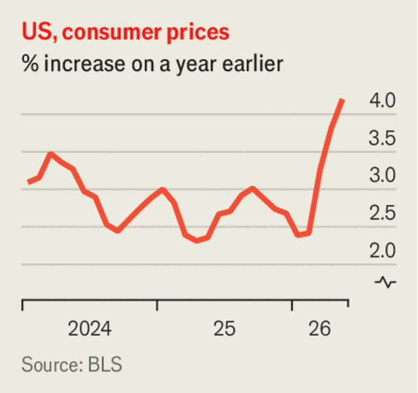

Business
June 11th 2026
OpenAI submitted a draft prospectus for its initial public offering, firing the starting gun on another blockbuster stock-market flotation. The firm said it had announced the filing because it expected it to be leaked, and had not yet decided on the timing of its IPO. Reports suggest it could come as early as September and target a market capitalisation of $1trn. Anthropic recently filed papers for its market debut. Meanwhile, SpaceX prepared its first sale of shares. The most eagerly anticipated IPO in years was said to be heavily oversubscribed.
Although investors were gripped by IPO euphoria, stock markets had a rocky few days, with tech-share prices falling the most since Donald Trump’s Liberation Day announcement of tariffs in April 2025. The NASDAQ Composite dropped by 4.2% on June 5th, and the S&P 500 declined by 2.6%. Markets bounced around in the following days. South Korea’s stock market was particularly volatile, causing a brief suspension in trading, as share prices in the country’s memory-chip-makers swung wildly.
One of those Korean chipmakers, SK Hynix, was reported to be preparing to list shares in America for the first time in August. The company acknowledged that it plans to sell American depositary receipts (enabling US investors to buy its shares) but said the details had not yet been decided.
The global demand for chips used in data centres and advanced electronics helped drive China’s exports up by 19.4% in May, year on year. The value of automated data-processing equipment sent abroad soared by 66.1%, but car exports also accelerated, by 39%.
The boss of BYD, a Chinese maker of electric vehicles, said his company would probably become the world’s biggest carmaker within five years. Wang Chuanfu’s comments were intended to reassure investors spooked by BYD’s falling share price amid a price war for EVs in China. In order to achieve its ambitions, BYD is rolling out ultra-fast battery-charging stations for its cars in China and Europe that can provide some models with a 70% charge in five minutes.
The European Central Bank raised interest rates for the first time since 2023, lifting its deposit facility by a quarter of a percentage point to 2.25%. The bank raised its baseline projections for inflation in 2026 and lowered them for economic growth. The full implications of the war with Iran will depend on the intensity and duration of the energy price shock, it said.

America’s annual inflation rate jumped to a three-year high of 4.2% in May, from 3.8% in April. Energy prices accounted for 60% of the rise in the monthly rate. Core inflation, which excludes energy and food, was more subdued at 2.9%.
The International Air Transport Association issued a report on the effects of the Iran war on the aviation industry. The closure of the Strait of Hormuz has “fractured the architecture” of global energy supply, it said, and jet-fuel prices have soared since late February. The combined profit of global airlines is now expected to be $23bn this year, a reduction by half from IATA’s previous forecast. Any prediction of a swift return to normal jet-fuel flows is “illusory”, it warned.
A bidding war broke out for Monte dei Paschi di Siena (MPS), which is based in Italy and is the world’s oldest bank, tracing its roots back to 1472. Banco BPM, Italy’s fourth-largest lender, proposed a “merger of equals” with MPS, only to see Intesa Sanpaolo, the country’s largest bank, submit a higher offer the next day that would create a European banking colossus worth about €130bn ($150bn). Intesa proposes to keep just half of MPS’s branches, and sell the rest of the retail operations to another bank.
In France, a consortium of Bouygues Telecom, Orange and Iliad agreed to buy SFR, a rival telecom company, for €20.4 billion ($23.5bn). SFR is part of a sprawling telecoms and media empire run by Patrick Drahi, one of France’s richest men, and the sale will help reduce the pile of debt held by his Altice group. But regulatory approval for the deal, which reduces France’s big telecom operators from four to three, is not assured.
GSK, formerly GlaxoSmithKline, agreed to buy Nuvalent, an American biotech firm specialising in cancer, for $10.6bn. It is the British drug company’s biggest-ever takeover of another firm.
Smartphones could account for some of the decline in America’s fertility rate, according to a working paper at the National Bureau of Economic Research. The researchers looked at the roll-out of the iPhone from 2007 to 2011, when it was sold only by AT&T, allowing them to “identify its effect from variation in AT&T’s mobile-broadband coverage”. The researchers found that “Overall, the diffusion of the iPhone explains 33–52% of the decline in the general fertility rate among women aged 15–44”. Possible explanations include a decline in personal interactions, availability of contraceptive advice on phones and more access to pornography.